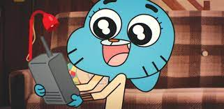

<!--  -->


<!--  -->


<!-- <a href="https://www.twitter.com" target="_blank">
    
</a> -->


<!-- image map  -->

<!-- 
<map name="workmap">
    <area shape="rect" coords="34,44,270,350" href="index.html" alt="Cartoon">
</map> -->

